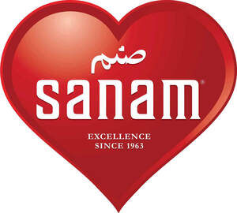

Trade Mark Journal No.2025/031 1 August 2025
UK00004219211 15 June 2025 (16,29,43)

- Class 16
- Paper and cardboard; printed matter; book binding material; photographs; stationery; gift boxes, paper bags, plastic bags, napkins, stickers, adhesives for stationery or household purposes; artists’ materials; paint brushes; typewriters packaging materials; printers’ type; printing blocks; disposable printed publications; cheque book holders.
- Class 29
- Meat, fish, poultry and game; meat extracts; preserved, dried and cooked fruits and vegetables; jellies, jams, fruit sauces; eggs, milk and milk products; edible oils and fats; prepared meals; soups and potato crisps, spices, cakes, pastries, sugar based products, chutneys.
- Class 43
- Take-out restaurant services; Fast-food restaurant services; Takeaway food services; Takeaway food and drink services; Take-away food services; Take-away food and drink services; Take-away fast food services; Provision of food and drink in restaurants; Take-away restaurant services; Food and drink catering; Catering of food and drink; Catering (Food and drink -); Catering of food and drinks; Fast food restaurants; Catering for the provision of food and drink; Preparation of food and drink; Serving food and drinks; Provision of food and drink; Preparation of food and beverages; Serving food and drink in restaurants and bars; Provision of food and beverages; Providing food and drink in restaurants and bars; Providing food and drink for guests in restaurants; Kiosk services, Restaurant services for the provision of fast food; Food preparation; Providing food and drink; Providing of food and drink; Services for the preparation of food and drink; Food and drink preparation services; Providing food and beverages; Serving food and drink for guests; Preparation and provision of food and drink for immediate consumption; Providing food and drink for guests; Services for providing food and drink; Take away food and drink services; Take away food services.
Mr Javed Iqbal
Mr Abdul Ghaffar
Mr Abdul Jabbar
Mr Abdul Qayyum Akhtar
Mr Abdul Rauf